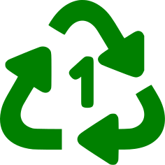
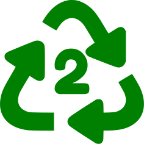
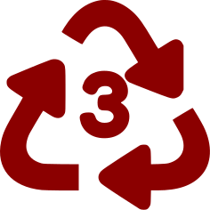
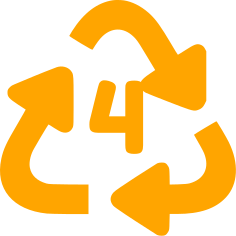
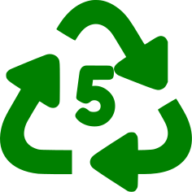
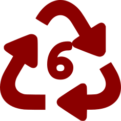
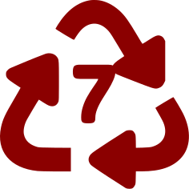
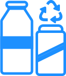
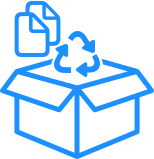
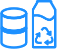

PET
PET (Polyethylene Terephthalate) is a widely used plastic found in most water and drink bottles, as well as some packaging. It is recyclable: the plastic is crushed, shredded into small flakes, and reprocessed to make new PET bottles or spun into polyester fiber. This recycled fiber is used to make textiles like fleece garments, carpets, and stuffing for pillows and life jackets. This item can be picked up in the kerbside!

HDPE
HDPE (High-Density Polyethylene) is a durable plastic used for milk, detergent, and oil bottles, toys, and some plastic bags. It is resistant to sunlight and temperature extremes, making it ideal for picnic tables, plastic lumber, waste bins, park benches, raised garden beds, and truck bed liners. HDPE is reusable and easy to recycle. This item can be picked up in the kerbside!

PVC
PVC (Polyvinyl Chloride) is a soft, flexible plastic used for clear food wrapping, cooking oil bottles, teething rings, toys, and blister packaging. It is resistant to sunlight and weather, making it suitable for window frames, garden hoses, plastic pipes, and trellises. PVC is not recyclable and should not be reused for food-related items or children's products. This item cannot be picked up in the kerbside!

LDPE
LDPE (Low-Density Polyethylene) is less toxic and relatively safe. It is used in shrink wraps, dry cleaner bags, squeezable bottles, bread packaging, and most plastic grocery bags. LDPE products are reusable but not always recyclable. Recycled LDPE is used for plastic lumber, landscaping boards, bin liners, and floor tiles. LDPE is recyclable but not in the kerbside
Find a recycler near you

PP
PP (Polypropylene) plastic is highly versatile and heat-resistant. It balances stiffness, impact resistance, and chemical resistance, making it widely used in packaging. It acts as a barrier against moisture, grease, and chemicals, and is used to make bottles, pottles, pails, trays, tubs, and lids for food and medicine packaging. This item can be picked up in the kerbside!

PS
PS (Polystyrene) is a cheap, lightweight plastic used for disposable cups, take-out containers, picnic cutlery, and packing peanuts. Recycling services do not accept it because it is weak and ultra-light. Polystyrene may leach styrene, a possible carcinogen, into food, especially when heated, and has been linked to health issues. This item cannot be picked up in the kerbside!

OTHER
Number 7 Recyclable products are uncategorised and differ from the standard 1-6 recycling standards. Due to how vast the range of products number 7 can include, it typically cannot be recycled effectively. Some examples include BPA, Polycarbonate, and LEXAN. These are typically used in containers or electronic devices. This item cannot be picked up in the kerbside!

Glass
Glass, as long as it is not shattered or broken, can be placed in your blue recycling bin for collection and recycling. This includes items like glass bottles and jars. Recycling glass helps reduce waste and allows the material to be reused in new products. Make sure that bottles and containers are rinsed before recycling. This item can be picked up in the kerbside, but has its own bin.

Paper & Cardboard
Cardboard and paper items, such as boxes and letters, can be placed in your kerbside recycling bin. Ensure that these items are free from contamination by food or drink residues. Clean, dry cardboard and paper help maintain the quality of recyclable materials and enable recycling. Cardboard must be flattened before recycling. This item can be picked up in the kerbside, but has its own bin.

Tins & Cans
Metallic, such as aluminium and steel, tins and cans can be collected in your kerbside recycling. This includes food cans, and drink cans. Make sure to rinse out food and drink contamination before recycling them. Do not flatten or press cans to make sure it can be recycled properly. This item can be picked up in the kerbside, but has its own bin.
Items under 50 Grams
Small items under 50 grams, such as bottle caps, bread tags, and packaging inserts, are generally not recyclable because they are too small to be processed by recycling machinery. These items can get lost in the sorting process, contaminate other recyclables, or damage the equipment. It's best to dispose of these small items in the regular trash. Certain international products may claim their small items are recyclable, however they do not fit within the New Zealand kerbside recycling rules. This item cannot be picked up in the kerbside!